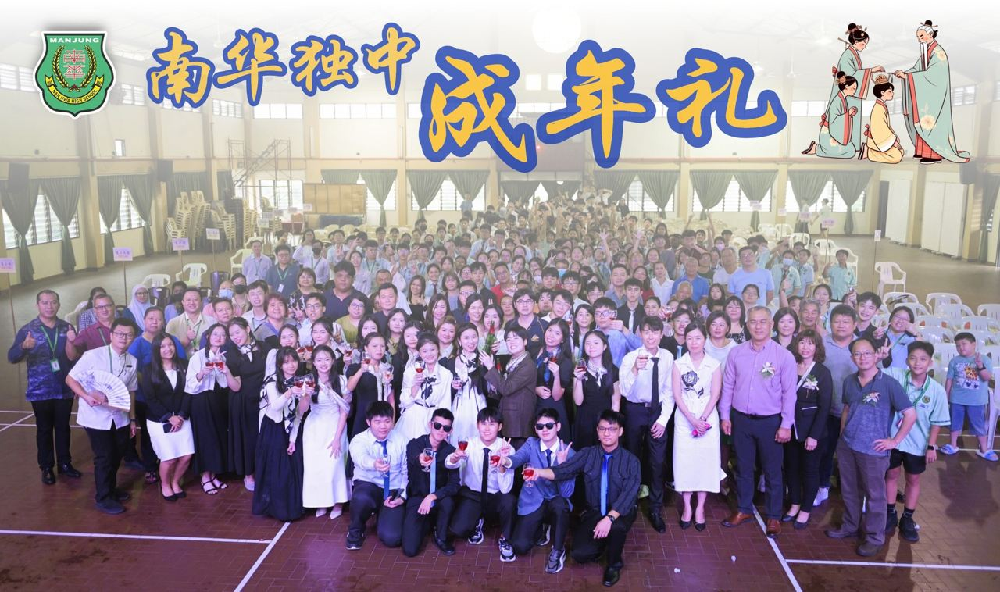
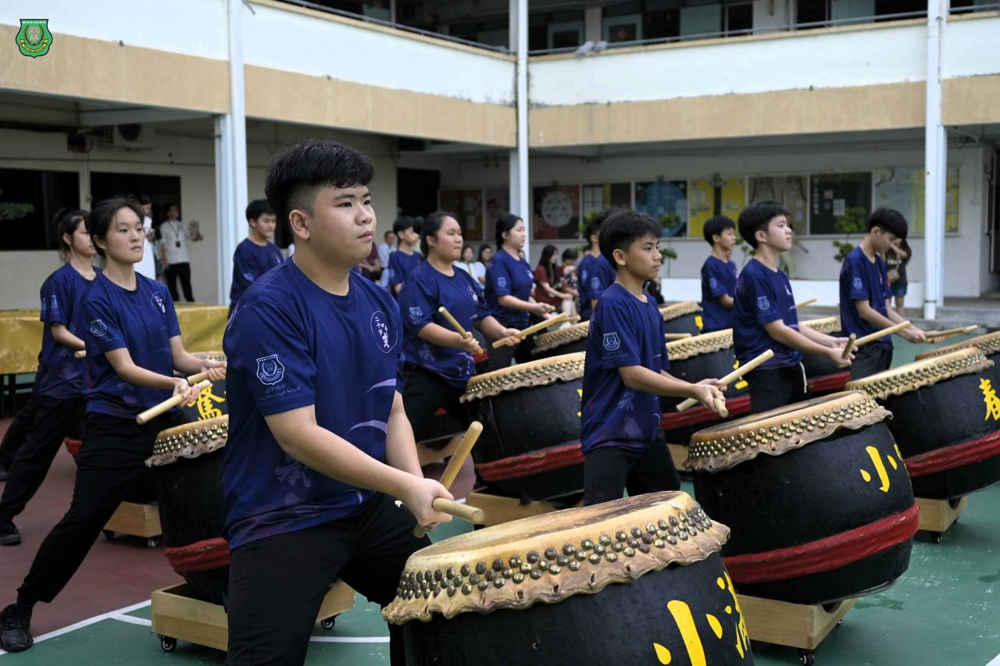
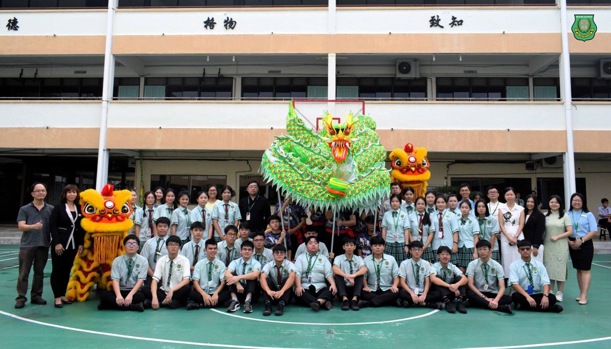
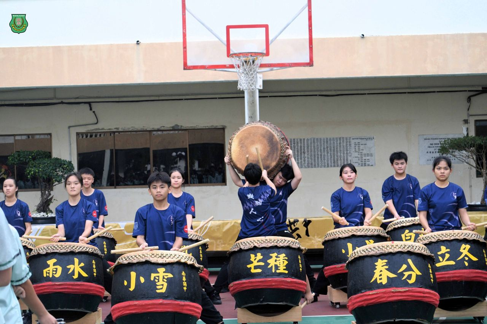
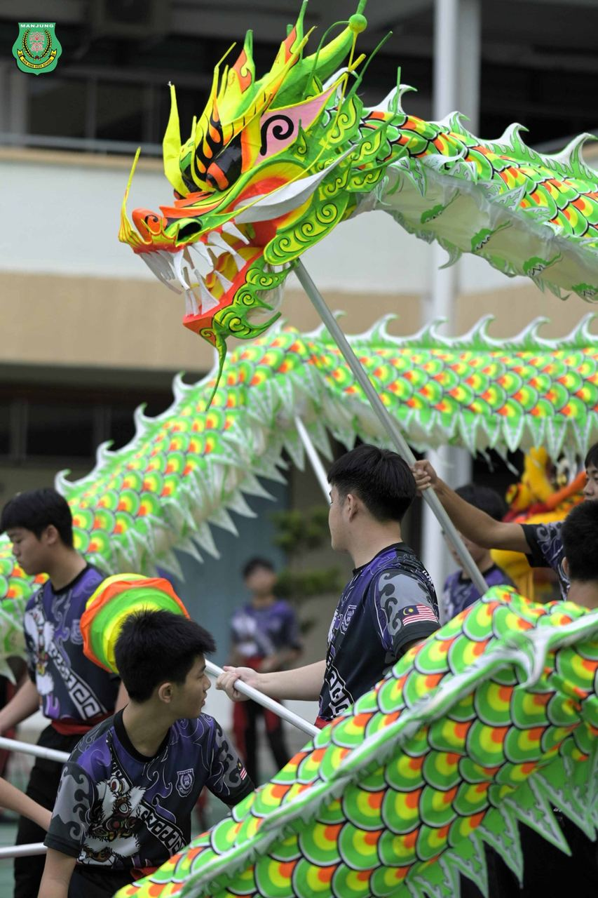
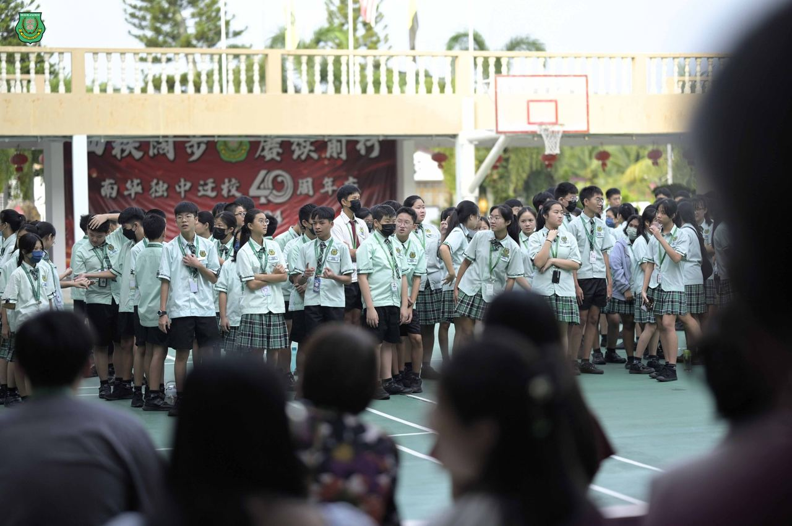
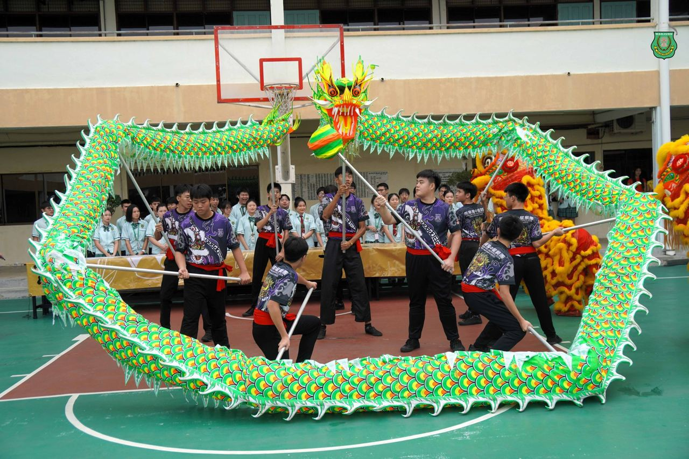
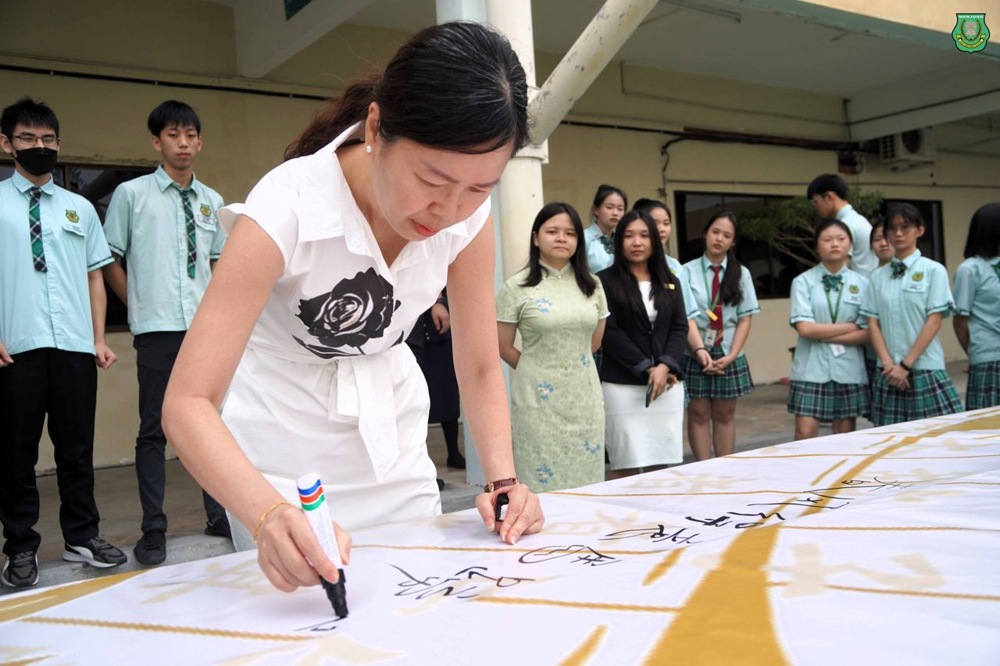

南华独中董家教师生齐聚一堂
南华独中董家教师生齐聚一堂
会考祈愿大会暨成年礼献祝福
南华独中于日前举办了一年一度的会考祈愿大会暨成年礼，为即将面对会考的高初中考生祈福，同时也“加冠受笄礼·成年风华茂”为成年礼主题，庆贺高三生正式迈入成人阶段。
祈愿大会：鼓舞士气，共迎挑战
会考祈愿大会在震耳欲聋的24节令鼓声中拉开序幕，加之舞龙舞狮，鼓声激昂，鼓舞着会考生以积极的心态迎接挑战。高三会考生在班导师带领下穿过龙门，寓意“鱼跃龙门·金榜题名”。校长陈丽冰博士亲笔题词“春风得意马蹄疾，金榜题名捷报传”激励会考生们奋力拼搏，载誉而归。
成年礼：加冠受笄礼，成年风华茂
成年礼仪式上，董事总务何添胜先生在致辞中特别强调了人工智能对未来世界的影响。他表示，未来世界充满了机遇与挑战，同学们要以积极的态度面对，并以“五个永远”勉励高三生：“永远保持善良，永远保持学习，永远记得南华的办学方针，永远记得敬爱家人，记得南华是你永远的家”。
校长陈丽冰博士为高三学生主持“三加”祝福，即以成年人的德行砥砺自我、以端庄威仪约束言行、以成年人的礼仪标准要求自己。她希望学生们能够珍惜光阴，不负韶华。
家长联谊会主席叶燕妮女士代表家长向高三学生表达了深深的祝福和期望，鼓励他们勇敢追逐梦想。高三学生代表致辞则表达了对母校、师长和家长的深深的感激之情。随后，全体高三学生共同举杯香槟，为成年礼仪式划下庄重不失温馨的句点。







